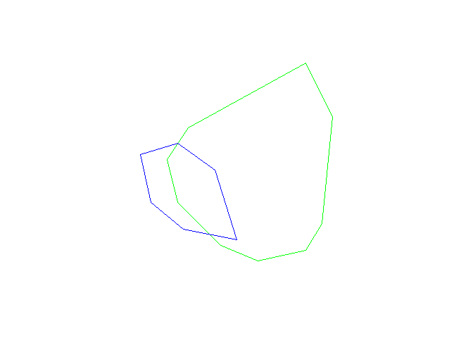
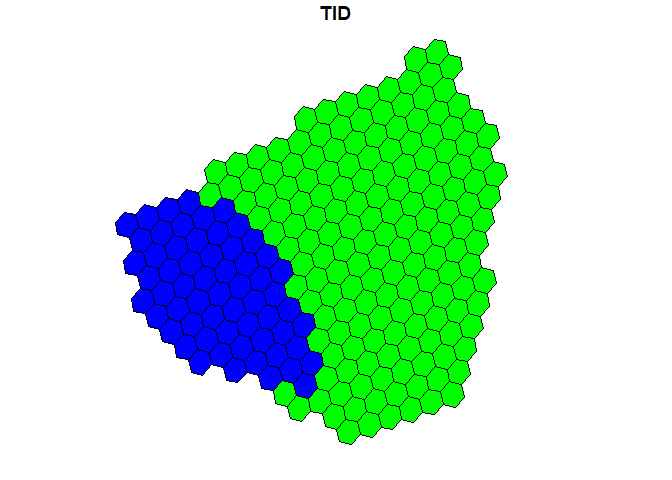
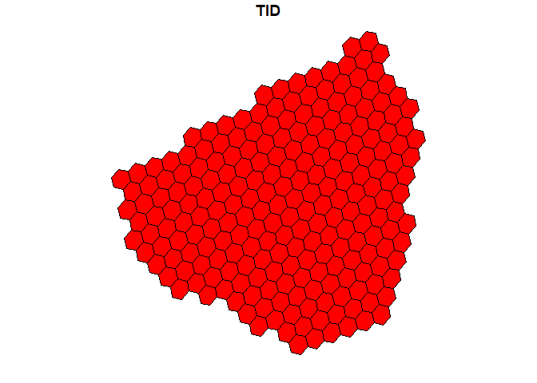

IDEAS spatial overlay
Tutorial Overview
This tutorial demonstrates some simple spatial overlay analysis of
polygon data using the IDEAS data model, as described in Robertson et
al. 2020.
Preliminaries
We will load some sample data from the stampr package, and pull out
two polygons to demonstrate overlay operations.
library(stampr)
library(sp)
data(mpb)
P1 <- subset(mpb, TGROUP==1)[5,]
P2 <- subset(mpb, TGROUP==2)[7,]
plot(P2, border="green")
plot(P1, add=TRUE, border="blue")

First we need to load some libraries;
library("dplyr")
library("dbplyr")
library("DBI")
library("leaflet")
library("sf")
library("RODBC")
library("nzdggs")
Loading Polygon Data from IDEAS
We will use the con data connection to access a table called mpb
which has the same data from the stampr package in IDEAS format.
mpb.i <- tbl(con,"MPB")
grid <- tbl(con,"FINALGRID2") %>% filter(RESOLUTION==19)
head(mpb.i)
#> # Source: lazy query [?? x 4]
#> # Database: NetezzaConnection
#> DGGID VALUE KEY TID
#> <dbl> <int> <chr> <int>
#> 1 4921587640 1 BOUNDARY 1264
#> 2 4921646690 1 BOUNDARY 1264
#> 3 4921587640 0 ID 1264
#> 4 4921646690 0 ID 1264
#> 5 4921587640 1264 tid 1264
#> 6 4921646690 1264 tid 1264
We want to pull out those same two polygons by identifying them by their ID values, as follows:
ID1 <- P1$ID
ID2 <- P2$ID
P1.i <- mpb.i %>% filter(KEY=="ID") %>% filter(VALUE==ID1) %>% inner_join(., grid, "DGGID") %>% mutate(WKT=inza..ST_AsText(GEOM)) %>% collect()
P2.i <- mpb.i %>% filter(KEY=="ID") %>% filter(VALUE==ID2) %>% inner_join(., grid, "DGGID") %>% mutate(WKT=inza..ST_AsText(GEOM)) %>% collect()
dbDisconnect(con)
plot(st_as_sf(P2.i, wkt='WKT', crs = 4326)['TID'], col='green', reset=FALSE)
plot(st_as_sf(P1.i, wkt='WKT', crs = 4326)['TID'], add=TRUE, col='blue')

Overlay Analysis using IDEAS data model
Intersection
intersection <- P1.i %>% inner_join(., P2.i, "DGGID")
plot(st_as_sf(P2.i, wkt='WKT', crs = 4326)['TID'], col='green', reset=FALSE)
plot(st_as_sf(P1.i, wkt='WKT', crs = 4326)['TID'], add=TRUE, col='blue')
plot(st_as_sf(intersection, wkt='WKT.x', crs = 4326)['TID.x'], add=TRUE, col='red')

Union
union <- union_all(P1.i, P2.i) %>% distinct(DGGID, .keep_all = TRUE)
plot(st_as_sf(union, wkt=c('WKT'), crs = 4326)['TID'], col='red')

A NOT B
ANotB <- P1.i %>% anti_join(., P2.i, "DGGID")
plot(st_as_sf(P2.i, wkt='WKT', crs = 4326)['TID'], col='green', reset=FALSE)
plot(st_as_sf(ANotB, wkt=c('WKT'), crs = 4326)['TID'], add=TRUE, col='red')

Last update: June 26, 2020